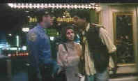

An
Autumn's Tale/B-,C+ |
| Mega Star/1987/95m/WS 1.85 |
There is a double delight to this romantic comedy set in New York City and its surrounds.
The characters are unusual and we get to see a view of the city from a foreigner's point
of view, which provides some fresh insights.
I looked forward with great anticipation to Chow Yun-Fat in a
romantic comedy. The actor has invested tough guy roles with huge amounts of charm,
but while he is charming in An Autumn's Tale, there are unredeemable aspects to
the character that make it hard to thoroughly enjoy the performance in this film.
When a young Chinese woman decides to come to New York to be with
her boyfriend who is attending college, she discovers his female appetites are widespread.
She winds up staying in an apartment above her cousin, a savvy Chinese immigrant who roams
about Chinatown gambling and gamboling with nary a care in the world save where the next
buck will come from. It's not long before the distant relatives make an emotional
connection. The best romantic moments are gently comic, but there are also some bursts of
violence that upset the harmony of this delicate tale of romance in New York.
There's nice chemistry between Chow Yun-Fat and Cherie Chung. You
can believe in their emotional journey. Directed by Mabel Cheung, An Autumn's Tale
moves at a natural pace and finds some interesting New York City settings.
 |
Times Square connection.©Mega Star |
This DVD import is a reasonable transfer. Much of the material is grainy, but I suspect
that is the way it was shot. Colors are somewhat muted. The image is generally sharp
enough. Most important, I was not disappointed in the quality and it did not impede the
path to movie pleasure. The subtitles are encoded on the DVD tracks and removable.
Therefore, there are no Chinese subs on the image: A big plus. The Dolby Digital 2-channel
audio is adequate.
|
The
Feature
Archive has articles ranging from A
Western is a Western is a Western to Screen
Voices, The
Heistmasters, Akira
Kurosawa, film preservationist Robert
Harris and Shawshank Redemption director Frank
Darabont.

Film Preservationist Robert Harris talks to Films on Disc.
Click on the image to learn more.
Check out the Movie
Poster Archive for
short bios and images of Susan Hayward, Kirk Douglas, Katharine
Hepburn and many more. This month's featured star is Clark
Gable.
Imaging
Science Foundation
The Imaging Science
Foundation promotes proper standards in home theater viewing.
ISF trained technicians offer monitor calibration services to
consumers. The difference in a properly calibrated monitor
can be astounding. Click on the image to find an ISF member near
you.
HOT
LINKS
Fade-In
Magazine
Did you like Scream, the energetic
youthful take on the horror genre written by newcomer Kevin
Williamson? Fade-In’s interview with the young filmmaker is
currently online for your enjoyment.
Widescreen
Movie Center
An excellent resource for original
aspect ratios of widescreen movies. Seems to be primarily if not
exclusively for anamorphic films.
Home Theater
Reference Reviewing System

When you read a DVD review it's of utmost importance to know what
equipment is being used to evaluate quality. Click on the projectors
to find out more.
|